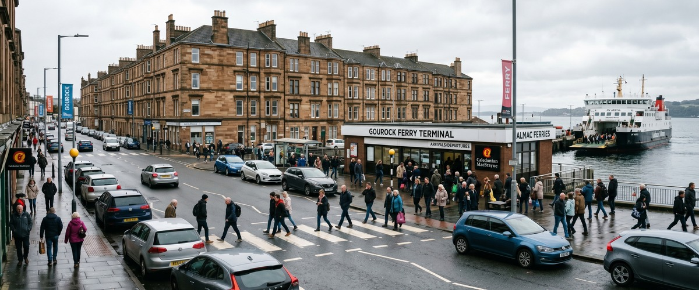
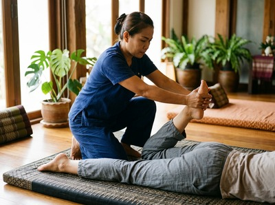
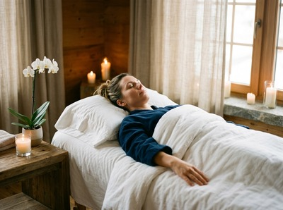

Gourock Ferry Terminal sits at the western tip of Inverclyde, where the ScotRail line from Glasgow ends and the CalMac ferry to Dunoon begins.

It is a busy crossing point used daily by commuters, travellers, and residents who move between Cowal, Argyll, and the Inverclyde coast. For anyone spending time around the terminal — whether catching a connection, waiting between crossings, or simply living in the surrounding streets — Thai Massage Greenock is just a short distance away along the Clyde waterfront.
Thai Massage Greenock is based on South Street in Greenock, directly connected to Gourock by the same coastal road and rail corridor. From the ferry terminal, the studio is easily reachable in minutes, making it a practical choice for a restorative session before or after a crossing. People travelling through Gourock regularly carry the physical load of commuting: long journeys, heavy bags, hours in transit. A treatment at Thai Massage Greenock offers real relief from that kind of accumulated tension.

Gourock itself is a residential and commuter town with a strong local identity. Many residents work in Greenock or Glasgow and travel through this terminal as part of their daily routine. Others live quietly in the town's hillside streets or along the seafront, drawn by the views across the Firth of Clyde and the calmer pace of life on Inverclyde's western edge. Thai Massage Greenock serves this whole community, offering professional, Wat Po trained therapy to clients who want more than a passing treatment. You can book your session online at any time.
All treatments are delivered personally by Jariya Malone, a certified therapist trained at Bangkok's Wat Po temple. Sessions are tailored to your needs on the day, whether you are carrying travel fatigue, managing a recurring physical complaint, or simply in need of proper rest.
From Gourock Ferry Terminal, the most direct route to Thai Massage Greenock is by train. Gourock Station sits directly adjacent to the terminal building, and ScotRail services run frequently along the Clyde coast toward Greenock Central and Greenock West. The journey takes around five to ten minutes.
By bus, McGill's services connect Gourock to Greenock town centre with regular departures. The 901 service runs between Gourock and Glasgow via Greenock, stopping close to the South Street area. If you are travelling by car, the A8 coastal road connects Gourock to Greenock in under ten minutes, with parking available near the studio on South Street.
The address is 0/2 16 South Street, Greenock, PA16 8UE. Once you have your appointment confirmed, book your session online in advance to secure your preferred time.
Jariya Malone trained at Wat Po in Bangkok, the temple school widely regarded as the founding institution of traditional Thai massage. This is not a chain or a franchise. Every treatment is delivered personally, with detailed notes kept from session to session so that care builds over time rather than starting from scratch each visit.

Clients come from across Inverclyde, including regular visitors from Gourock, Dunoon, Kilmacolm, and Port Glasgow. Whether you are dealing with back pain from a long commute, neck and shoulder tension from desk work, or the broader effects of stress on your body and sleep, Thai Massage Greenock provides therapeutic care that addresses the cause rather than masking the symptom.
Gourock has a long connection to the Firth of Clyde. The town grew from a fishing village into a seaside resort and commuter base, retaining its distinct character at the western edge of Inverclyde. The ferry link to Dunoon, first established in 1820, remains central to its identity today, with CalMac operating regular crossings and Gourock Station serving as the rail terminus for the Glasgow line. For more on the town's history, see Gourock on Wikipedia.
Thai Massage Greenock is on South Street in Greenock, around five to ten minutes from Gourock Ferry Terminal by train or car. Gourock Station is directly next to the terminal building, and ScotRail services run regularly along the coastal line toward Greenock. It is one of the most convenient massage studios to reach from the Gourock area.
The easiest option is the ScotRail train from Gourock Station, which sits immediately beside the ferry terminal. Trains run frequently to Greenock Central and Greenock West, both within easy walking distance of South Street. The McGill's 901 bus also connects Gourock to Greenock town centre. By car, the A8 coastal road takes under ten minutes.
Same-day appointments are occasionally available depending on the schedule. The best approach is to check availability and book online, or call the studio directly on 01475 600868. Booking in advance is recommended to secure your preferred time, especially for evening and weekend slots.
Traditional Thai Massage is a strong choice for travel fatigue. It uses acupressure and assisted stretching to release tension that builds up through long journeys, sitting, and carrying luggage. Thai Oil Massage is another popular option if you prefer a more flowing, deeply relaxing treatment using warm therapeutic oils. Jariya will discuss your needs before the session to make sure the treatment is right for you.
Thai Massage Greenock is open seven days a week, with appointments available during the day and into the evening to suit commuters and those travelling through the Gourock area. Check the online booking form for current availability, or call 01475 600868 to speak directly with the studio.